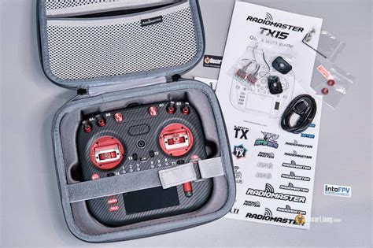

C'est quoi une radiocommande et comment ça fonctionne ?
Une radiocommande c'est :
• Ce qui va permettre de contrôler les modèles réduits
• Ça envoie des ondes radio a un récepteur qui va donner des informations au modèle
Les Modes ?
Il existe différents Modes pour les radiocommandes :
• Mode 1 (gaz à droite)
• Mode 2 (gaz à gauche)
• Mode 3 (gaz à droite)
• Mode 4 (gaz à gauche)
Le mode dépend surtout du type et de vos préférences de pilotage.
